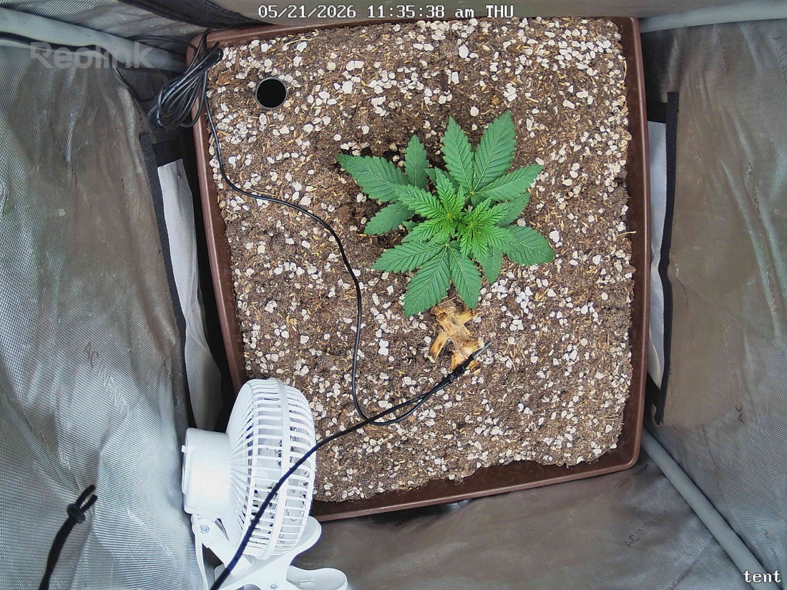

← All reports
May 21, 2026
Thu May 21, 2026 — 11:35 AM

Prognosis
Daily check-in — papaya crush, day ~23 from germ
- Framing change, not plant change: the ~40-minute gap is too short for real growth. Camera angle shifted (plant now appears center-right vs. center-left) and the clip fan was repositioned closer/lower — that's the main visual delta.
- Canopy: 4–5 well-developed serrated leaf sets, symmetric, flat, deep green. Petioles holding leaves out horizontally — healthy light-seeking posture, no praying/tacoing.
- Structure: short internodes, stocky stem, no stretch — exactly what you want at 18/6 with 400 PPFD this early. Node stacking looks tight.
- Stress signs: none. No edge burn, no interveinal yellowing, no clawing, no bleaching at the tops despite the recent 330→400 push. The yellow/brown bit on the soil is the old stump/organic matter (per no-till note) — ignore.
- Soil surface: dry/light-colored top layer, consistent with day 2 post-water (last watered 5/19). Perlite cap looks even, no crusting or salt buildup.
- Environment: clip fan now angled at the plant — good for stem strengthening as long as leaves aren't fluttering hard. Confirm airflow is indirect/gentle.
- Phase check: germ 4/28 → ~3.5 weeks in, ~2.5 weeks in tent. 4–5 true node pairs at this stage is on-track to slightly ahead for a photoperiod in living soil. Right on schedule for early veg.
- Next actions: no action needed. Hold 400 PPFD, next water likely 5/23–5/24 (check finger-test at 2" depth). Continue logging.
Overall: healthy, on-pace early veg — the two snapshots just differ in framing, not in plant condition.